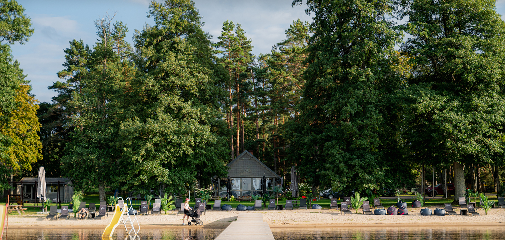
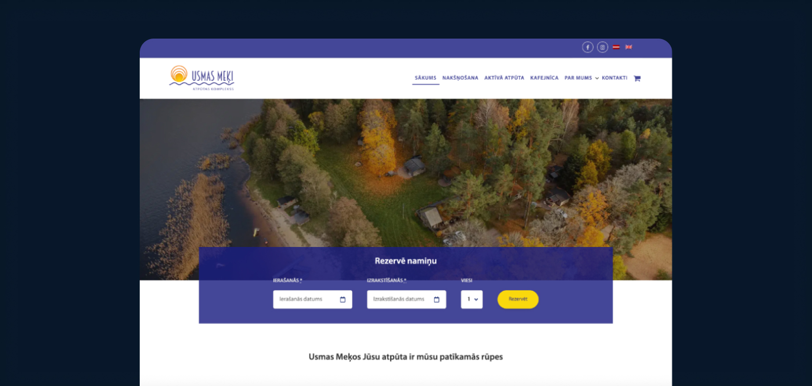
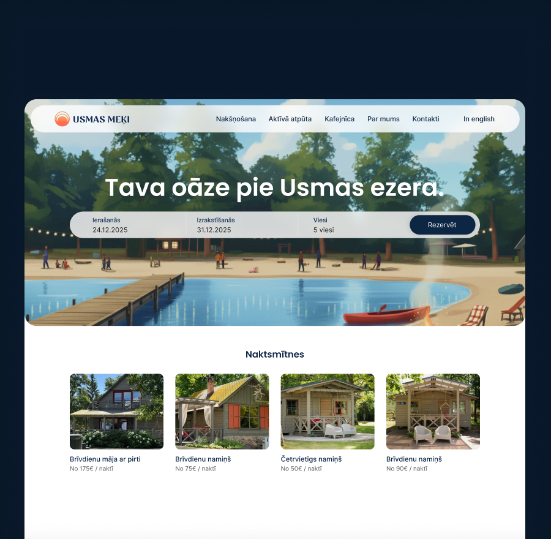
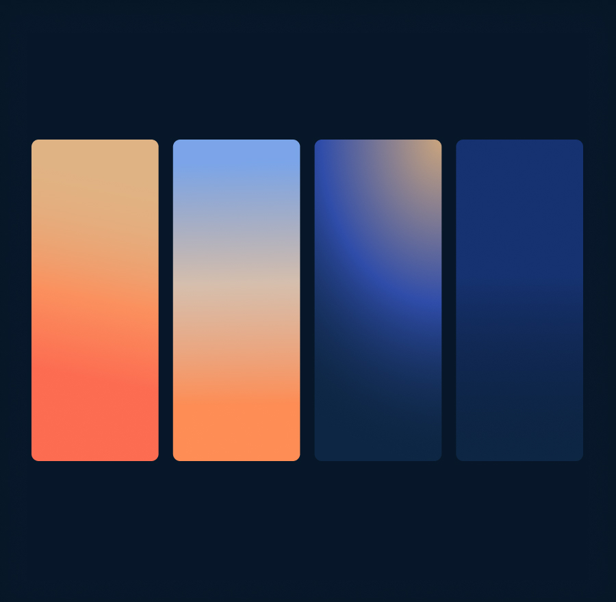
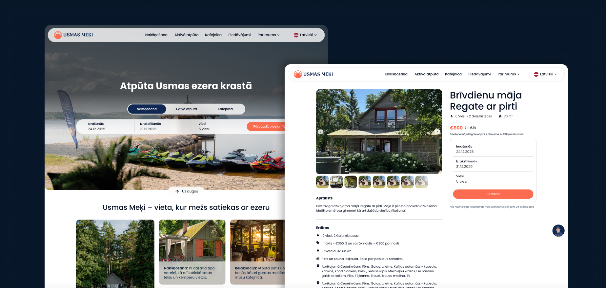

E-commerce website & Brand Redesign
Project for Usmas Meķi
Launched

Project for Usmas Meķi

Usmas Meķi is a popular recreation complex located on the shores of Lake Usma, Latvia. It offers visitors a peaceful nature escape with various cabin rentals, camping spots, and event spaces. To match a growing demand for local tourism, they needed a digital presence that felt premium, modern, and trustworthy.
The physical experience of staying at Usmas Meķi is peaceful and scenic, but their old digital storefront didn't reflect that vibe at all. It was outdated, structurally cluttered, and made finding basic details about individual cabins a chore. In hospitality, your website is your lobby - if it feels clunky and neglected, users assume the physical location might be too.

The primary friction point was the booking and information-gathering process. When people book accommodation today, their expectations are shaped by industry giants like Airbnb and Booking.com. They expect clear imagery, upfront pricing, straightforward availability, and a frictionless checkout flow. The old website lacked clear UX patterns, forcing users to jump through hoops just to see if a cabin was free or what amenities it included.
Additionally, the visual identity needed a refresh to align with a cleaner, more modern aesthetic without losing its authentic, nature-rooted soul.


Familiar UX meets minimalist nature. I split the project into two parts: a secondary brandbook refresh and a primary website overhaul.
For the brandbook, I cleaned up the visual identity, introducing a modern typographic hierarchy and a color palette inspired by the natural surroundings of Lake Usma - clean, grounded, and minimalist.
For the website, the guiding principle was to use established UX patterns instead of reinventing the wheel. I closely studied the user flows of major accommodation sites to design a highly visual, familiar booking system. The new layout puts individual cabins center stage with bold typography, generous white space, and clear icon-based amenity lists. The booking flow was structured linearly, letting users easily pick dates, view available cabins, and understand exactly what they were purchasing.
The biggest hurdle on this project wasn't the design phase - it was the implementation reality.
The development team was locked into a rigid WordPress platform with heavy template and plugin limitations. As a designer, you naturally want to push for smooth transitions, real-time calendar interactions, and custom checkout flows. Instead, serious technical sacrifices had to be made.
Knowing the platform's strict constraints, I had to pivot quickly and re-engineer my design solutions around what the system could actually handle. If a custom dynamic filter was out of the question on their backend, I stripped away the complexity and redesigned the layout to achieve that exact same clarity using smart visual hierarchy and simpler components. It was an exercise in pure pragmatism - accepting platform limitations where necessary, but doing everything in my power to ensure the core UX remained as good as possible.

The new website launched successfully! It completely transformed how Usmas Meķi presents itself online. Information about the cabins is now fully accessible, transparent, and beautiful to look at.
Even though some of my ideal, advanced interaction features had to be left on the cutting room floor due to the platform limitations, the functional lift was massive. The complex now has a cohesive brand and a digital storefront that looks competitive, instills trust, and makes reserving a lakeside escape incredibly straightforward.
This project was a great reminder that good design is about solving business problems within real-world constraints. Working with rigid platforms like WordPress forces you to strip away the fluff and focus entirely on core UX patterns and visual clarity. You don't always need a custom React stack to completely change a business's fortune - sometimes, just giving users a familiar, clean, and honest way to book a cabin is the biggest win of all.